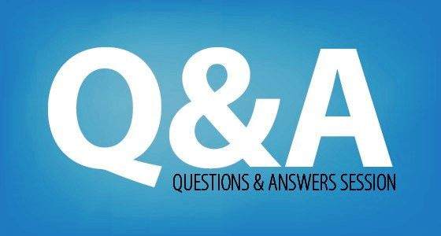

21 Frequently Asked Questions Part 1:The Family

In this blog post, I will be answering the questions that I have been asked by the adults and children in my family.
- 1.What are you studying at school?
- My major is Media and Information with a focus in game design.
- 2.Do you like college?
- I like the networking and social events that come with college but I do not like having to attend the classes.
- 3.How many washcloths do you use at once?
- I use 2 washcloths at once. One for my face and the other is for my body.
- 4.Do you want kids, if so how many?
- Yes, I would like to have kids.I don’t want an odd number of children so I want either 2 or 4 kids.
- 5.Are you a boy or a girl?
- I am a female and my pronouns are she, her, and hers.
- 6.How long have you had braces?
- I have had braces for almost a year.
- 7.How long do you have to wear your braces?
- I have to wear them for 1 year and 10 months.
- 8.How many friends do you have?
- I have 2 best friends named Adrienne and Michelle and a lot of acquaintances.
- 9.What size shoe do you wear?
- My shoe size varies from 8.5 to 9.5 in mens.It just depends on the shoe.
- 10.Do you like scary movies?
- All of the scary movies I've seen weren’t actually scary and the characters in them kept making extremely dumb choices so no, I do not like scary movies.
- 11.Do you have a hard time talking to people in your classes?
- No, but I’m not going to talk to anyone unless I have to.
- 12. Do you like cats or dogs more?
- Dogs, preferably puppies. Cats are too creepy to like.
- 13.What is your zodiac sign?
- I am a Taurus.
- 14.Do you know how to make video games?
- I do not know how to make one at the moment, but hopefully at some point I will.
- 15.What is your favorite food?
- My favorite food is fried shrimp.
- 16.Do you believe in god?
- No, I do not believe in god.
- 17.Do you want to study abroad?
- No, I don't have any interest in studying abroad.
- 18.Are you going back to East Lansing for school?
- All of my courses are online due to the pandemic so as of right now, there's no point for me to go back to East Lansing.
- 19.What are you going to do with your hair?
- I’m not sure yet but I'm going to continue letting it grow out until I make a final decision on how I want to style it.
- 20.Why do you have a year's supply of gum in your drawer?
- The reason I have so many packs of gum is because I like to buy in bulk.
- 21.What did you do for your 21st birthday?
- Unfortunately, I couldn't do anything for my 21st birthday but stay at home because of the pandemic.
Published Date: